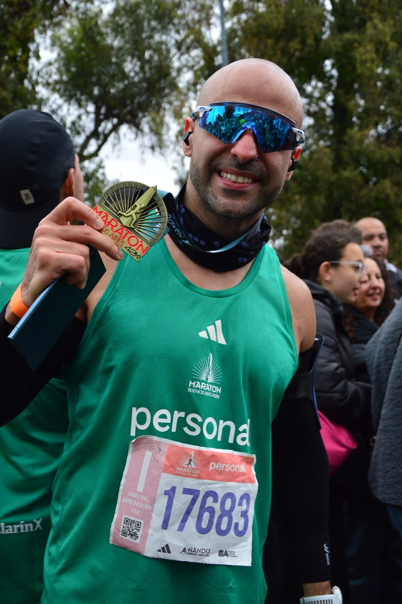

Cuerpo y hábitos: qué le pasó a mis horarios, a mi masa muscular y al funcionamiento del corazón al cambiar el gimnasio por el entrenamiento de fondo.
Comparación directa entre mi punto más alto en el gimnasio y el día que corrí la maratón.
| Qué miramos | En el gimnasio (Mayo) | Para la maratón (Septiembre) | El cambio |
|---|---|---|---|
| Masa muscular | 71.5 kg | 68.9 kg | -2.6 kg (-3.2 kg en total) |
| Masa grasa | 11.2 kg | 13.2 kg | +2.0 kg (+17.8%) |
| Deporte principal | 18 días al mes de pesas | 21 salidas al mes de running | El running reemplazó al gimnasio |
| Gasto en una sesión | ~650 kcal (Fuerza) | 3.279 kcal (Maratón) | 5 veces más energía en 1 día |
| Horario habitual | 19 a 21 hs (días de semana) | 7:30 a 11:30 hs (fines de semana) | Fondos largos de sabados a la mañana |
Para correr fondo no podía cargar tanta masa muscular encima. Para volverme más liviano y aguantar el impacto, el cuerpo terminó bajando más de 3 kilos de músculo en los 4 meses más duros.
En el gimnasio se ejercita mucho, pero se descansa entre series. Correr una maratón implicar modificar la cabeza: se debe exigir a estar horas seguidas con el corazón arriba sin frenar.
En la semana mantuve los entrenamientos a la tarde y sume clases de running, pero para los fondos largos de 20 a 30 km tuve que acostumbrarme a salir a las 7 de la mañana los sábados y domingos.

El balance: Fue un desgaste físico enorme y hubo que aprender mucho, pero cruzar la meta con la medalla hizo que todo el esfuerzo valiera la pena.